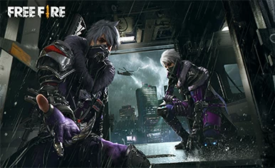

GARENA FREE FIRE
Garena Free Fire is the ultimate survival shooter game available on mobile. Each 10-minute game places you on a remote island where you are pit against 49 other players, all seeking survival. Players freely choose their starting point with their parachute and aim to stay in the safe zone for as long as possible. A new episode of Free Fire - High Tide has released recently, with the background of a story of exploring the gems and gold. Plus, A new spunky character Notora is going to join the clan in Free Fire! All these fresh heroes and episodes you can experience on PC with GameLoop.
You could obtain the Best gaming experience on PC with GameLoop, specifically, the benefits of playing Garena Free Fire on GameLoop are included as the following aspects:
* Rapid and Accurate Controller Support. Free Fire is a type of FPS game, which demand the players to practice a fast and precise shooting or aiming skill. According, GameLoop provides the unique Two-Engine system (especially the AOW engine), supporting the requirement of players to customize keymapping design, optimizing the utilization of keyboard and mouse.
* Ultimate Graphic and Vision, Exclusive Support of 2K Resolution. In order to establish an immersive gaming environment for players, GameLoop spends lots of effects to improve graphic quality in each game. Hence, players of Free Fire could notice an amazing map with various views on GameLoop with a big screen.
* Lower Equipment Requirement, Min. 2GB RAM. FPS games usually need to take account of the control flexibility and smooth experience of the game. GameLoop could offer a in-depth adaption, fixing the common problem about the fast power consumption of mobile, which ensures players could obtain a fantastic gaming experience on PC.
LATEST NEWS
[Garena Free Fire] All Thing You Need To Keep Eye on Garena Free Fire in 2020 – Limited Special Gold Royale, Alvaro, Nian Beas, and Treasure Hunt
[Garena Free Fire] Review of The Exclusive Updates of Garena Free Fire This Week - Trap Revolution, Custom Room Cards and more
 [Garena Free Fire] All Thing You Need To Keep Eye on Garena Free Fire in 2020 – Limited Special Gold Royale, Alvaro, Nian Beas, and Treasure Hunt